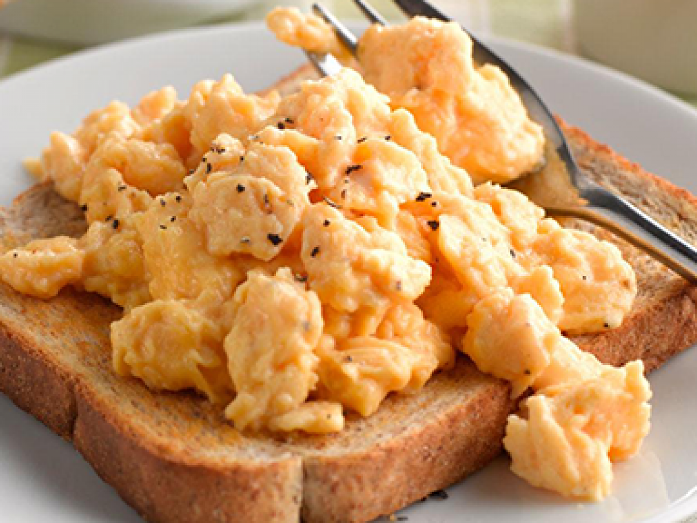

Scrambled Eggs and Toast

A good protein rich breakfast. Very tasty
and easy to make as well as a low ingredient
count.
Ingredients
- 4 Eggs
- 1 tbsp Olive Oil
- Salt
- 1 Slice of Whole Wheat Bread
Steps
- Set pan to medium high heat and add
oil to the pan
- Crack 4 eggs into a bowl
- Add salt and whisk bowl
- Pour out bowl into pan
- Stir until eggs are cooked to your preference
- Toast bread if desired
- Enjoy!